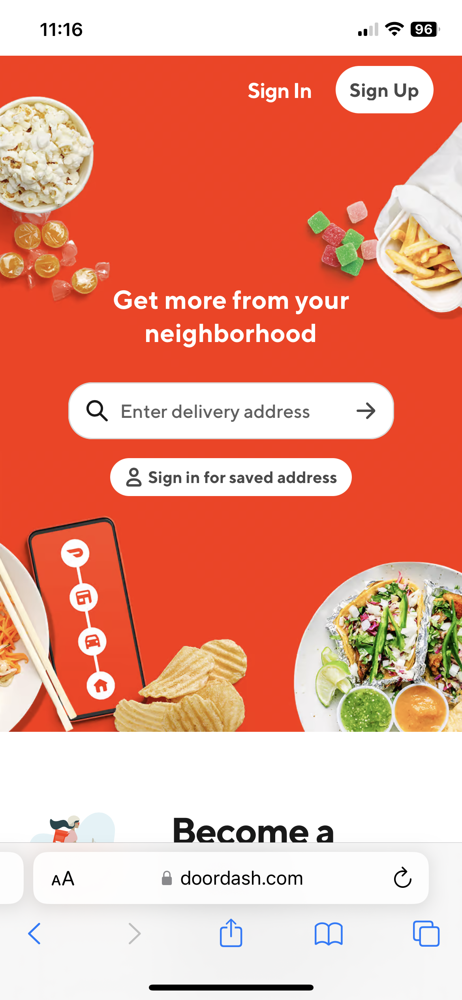
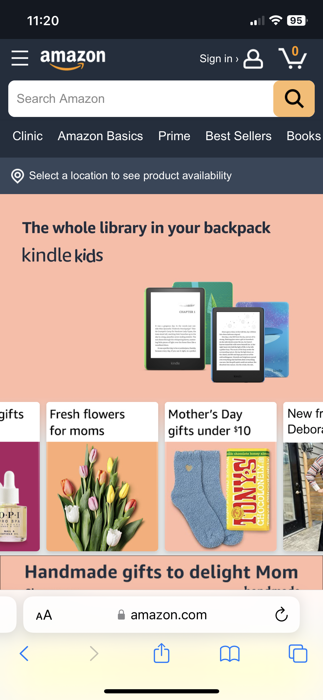

PARC Repetition
Repetition is used on this page with the similar shaped pictures. The pictures overlap each other and are all rectangles with rounded cornes. As you scroll down the website, this design element is used throughout each page. It helps the website to be interesting to look at, because everything else is simple and to the point. This helps it to not look overcrowded or too busy.
Visual Hierarchy
Doordash
Doordash
Visual hierarchy is used on this page so that the focal point is to enter your address and get started on ordering food. This design is implemented by keeping the look simple yet bold. The type is in the center of the page and the background is a deep red, which helps the white text pop out. The edges of the screen are scattered with different food options which is where the users eyes naturally go to next. Then the user is drawn to the top right corner where they are asked to sign up or sign in.
Rule of Thirds
Amazon
Amazon
The rule of thirds is used on this page at the top. It has a slideshow of pictures that the user can scroll through. In every picture they are using the rule of thirds so that it is pleasing to look at. In the screenshot above you can see that the kindles are off to the side. This helps draw attention to them.